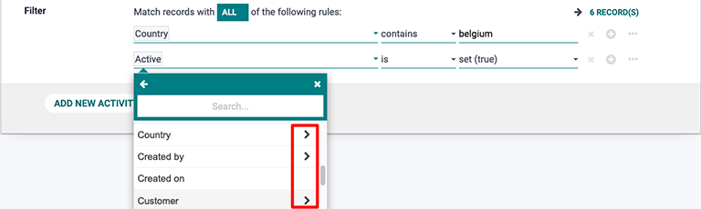
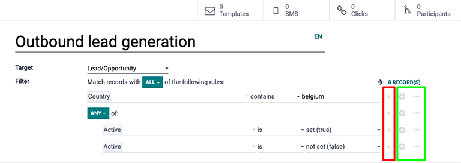

Dirigirse a un público¶
Llevar campañas de marketing a la audiencia adecuada es fundamental para el crecimiento de una empresa. La aplicación Automatización de marketing de Odoo ayuda al personal de marketing a lograrlo al brindarles herramientas de filtrado, tan sencillas o complejas como lo necesiten, para llegar a los clientes indicados en el momento correcto.
Configurar filtros de objetivo¶
Al configurar los filtros de objetivo en una campaña de marketing, hay algunas opciones que tienen el icono > (flecha) junto a ellas. Esta flecha indica que el filtro tiene parámetros más específicos que se pueden personalizar.
Los filtros se pueden expandir mediante ramas y nodos. Un nodo agrega otro parámetro de filtrado a un grupo de condiciones segmentadas (por ejemplo, una nueva línea) y una rama crea un grupo de parámetros muy específicos, lo que permite agrupar filtros mediante declaraciones de tipo ANY o ALL.
Hay dos opciones cada que se crea una nueva rama:
Los registros pueden coincidir con TODOS los criterios de las reglas, esto crea una sentencia AND en la que todos los criterios deben coincidir.
Los registros pueden coincidir con CUALQUIER criterio de las reglas, esto crea una sentencia OR en la que solo uno de los criterios debe coincidir.
Para cambiar entre estas dos opciones solo haga clic en el icono de flecha desplegable en el recuadro verde y seleccione CUALQUIERA o TODOS.
Para agregar un nodo haga clic en el icono ➕ (signo de más) y para agregar otra rama haga clic en el icono … (puntos suspensivos). Haga clic en el icono ✖ (eliminar) para excluir un nodo o una rama.
Casos de uso¶
Los siguientes escenarios describen distintas combinaciones de filtros que una campaña de marketing puede utilizar con frecuencia.
Escenario 1: delimitar el objetivo a nuevas oportunidades en el flujo¶
En el modo de edición del formulario de plantilla de una campaña (al hacer clic en el botón editar), seleccione el campo objetivo y haga clic en buscar más en el menú desplegable. Después, busque la opción Lead/oportunidad y selecciónela.
A continuación, haga clic en agregar filtro en el campo Filtro. Haga clic en la opción predeterminada de filtro ID en la primera parte de la ecuación para el filtro. Al hacerlo, se abre un menú desplegable de opciones de filtro. En este menú desplegable, navegue a (o busque) la opción tipo.
Mantenga la segunda parte de la ecuaci√≥n de filtro en su forma predeterminada con el icono üü∞ (signo de igual).
Luego, cambie la tercera (y última) parte de la ecuación de filtro de lead a oportunidad. El número de registros que cumplen con esta ecuación de filtro en específico cambiará conforme se personalice la ecuación.
Agregue otro nodo a este filtro, haga clic en el icono ➕ (signo de más) a la derecha de la ecuación.
Como las oportunidades «nuevas» son el objetivo de este filtro, el segundo nodo solo se concentrará en encontrar oportunidades que estén en la etapa nuevo del flujo. Para hacerlo, seleccione el ID predeterminado de la primera parte de la segunda ecuación de filtro y navegue a (o busque) la opción etapa del menú desplegable de campos.
De nuevo, mantenga la segunda parte de la ecuaci√≥n de filtro en el icono üü∞ (signo de igual).
Por último, resalte el valor predeterminado en la tercera (y última) parte de la segunda ecuación de filtro y escriba nuevo. Una vez hecho esto, Odoo solo tendrá por objetivo oportunidades que se encuentren en la etapa «nuevo» del flujo.

Escenario 2: delimitar el objetivo a los asistentes de un evento que compraron un boleto en específico¶
En el modo de edición del formulario de plantilla de una campaña (al hacer clic en el botón editar), seleccione el campo objetivo y haga clic en buscar más en el menú desplegable. Después, navegue a (o busque) la opción Evento y selecciónela.
A continuación, haga clic en agregar filtro en el campo filtro. Haga clic en la opción predeterminada de filtro ID en la primera parte de la ecuación de filtro. Hacerlo abre un menú desplegable de opciones de filtro. En este menú desplegable, baje (o busque) la opción evento.
Haga clic en el icono üü∞ (signo de igual) predeterminado en la segunda parte de la ecuaci√≥n de filtro. Esto abre un menú desplegable, seleccione la opci√≥n contiene.
En la tercera (y última) parte vacía de la ecuación de filtro, escriba el nombre de los eventos que Odoo debe considerar para este filtro de campaña.
Luego agregue otro nodo a este filtro, haga clic en el icono ➕ (signo de más) a la derecha de la ecuación.
El segundo nodo se centrará en enfocar esta campaña a los asistentes que compren un tipo específico de boleto para los eventos mencionados en la primera ecuación del filtro.
Para ello, seleccione el ID predeterminado de la primera parte de la segunda ecuación de filtro y navegue a (o busque) Boleto de evento desde el menú desplegable del campo. Luego, en el mismo menú desplegable, seleccione Nombre.
Vuelva a hacer clic en el icono üü∞ (signo de igual) predeterminado en la segunda parte de la ecuaci√≥n de filtro y seleccione contiene.
Por último, en la tercera (y última) porción de la segunda ecuación de filtro, la cual se encuentra vacía, escriba el nombre del tipo de boleto que se debe usar en el filtro. En este caso el nombre del tipo de boleto de evento para este filtro es Estándar.